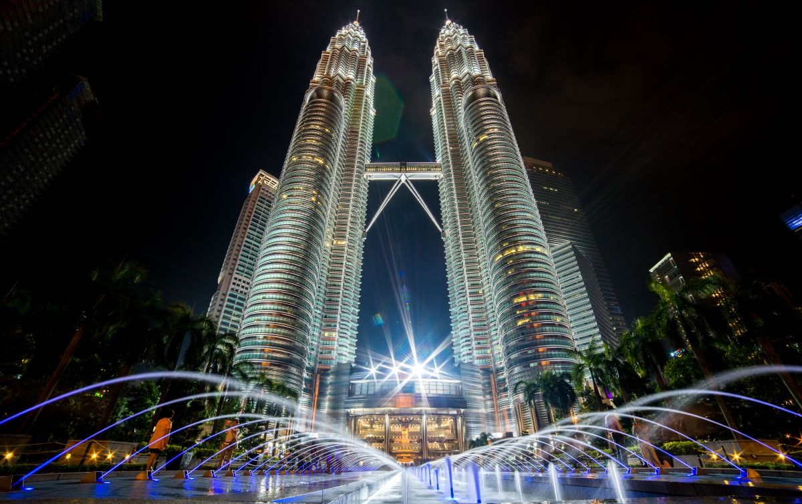

Country Guides
Country GuidesStudy in Malaysia for Pakistani students has quietly become one of the smartest moves available right now. While the world watches the United Kingdom, the United States, and Canada dominate the headlines, Malaysia offers Pakistani applicants something those markets no longer do: genuinely affordable world-ranked degrees, an English-medium education system that understands your HEC credentials, a visa process that takes weeks rather than months, and a Muslim-majority society where your daily life does not force you to compromise on faith or food. Every year more families in Lahore, Karachi, Islamabad, Multan, and Peshawar reach the same conclusion, and the numbers prove it. Malaysia now hosts more than 100,000 international students, and Pakistanis form one of the fastest-growing national groups among them.
This guide walks you through the entire journey of a study in Malaysia for Pakistani students plan: why the country makes sense, which Malaysian universities for Pakistani students deserve your application, the real cost of studying in Malaysia, how to secure a Malaysia student visa from Pakistan step by step, expected Malaysia student visa processing time, the actual Malaysia student visa fees, whether you can study in Malaysia without IELTS, and which scholarships for Pakistani students in Malaysia you should apply for in parallel. By the end, you will have a complete working plan, not just another list of nice-sounding facts.
Why study in Malaysia? The honest reasons and the honest trade-offs
Before you compare minimum IELTS bands or tuition tables, understand what Malaysia actually sells. Malaysian universities are not trying to be Oxford or Harvard. They are trying to give you an internationally recognised degree, taught in English, at roughly a quarter of the Western price, with an education system that still follows the British model Pakistanis already understand. That positioning creates real advantages for Pakistani applicants, and also two trade-offs you should accept in advance.
The first advantage is cost. The cost of studying in Malaysia sits in a very specific and attractive band: total annual expenses, including tuition, accommodation, food, and transport, typically land between USD 8,000 and USD 14,000 for most undergraduate and postgraduate programmes. Compare that with the UK at USD 35,000 to 45,000 a year or the USA at USD 40,000 to 60,000, and you start to see why families that cannot fund a Western education still want a Western-style degree. Our study-abroad cost and budget guide lays out the same comparison across every major destination in a single table.
The second advantage is speed. Admission decisions in Malaysia arrive quickly, the Education Malaysia Global Services (EMGS) pipeline is efficient, and a complete Malaysia student visa from Pakistan application routinely clears in under two months. If you are planning for an intake that is only a few months away, Malaysia is one of the few destinations where that is still feasible. The same timeline in Canada or the UK has stopped being realistic.
The first trade-off is recognition. Malaysian degrees are well recognised in Pakistan, Singapore, the Gulf, and across Asia, and many Malaysian campuses run twinning and credit-transfer programmes with British, American, and Australian universities. But if your dream is a career in the core of the London or New York job market, the brand weight of a Malaysian degree is lighter than a British or American one. If your dream is a strong engineering, computing, business, or medical career anywhere in Asia or the Gulf, Malaysian universities for this purpose are genuinely excellent.
The second trade-off is work rights after graduation. Malaysia is tightening its post-study options, and most Pakistani graduates return home, move to the Gulf, or relocate to another country for work. You should treat Malaysia as a place to build a credential and a network, not as an automatic route to permanent residence.
The most important way to think about this decision
There is a single mental model that separates students who succeed in study in Malaysia for Pakistani students plans from those who fail: treat your degree as an investment portfolio, not a stamp collection. A stamp collection approach asks, "Which university name looks most impressive?" A portfolio approach asks, "Which combination of credential, cost, language skills, and professional network gives my family the best return for the money we can actually pay?"
Once you shift to that mindset, Malaysia stops looking like a compromise and starts looking like a rational choice for a specific profile: students whose family savings sit in the PKR 2 to 8 million range, students targeting English-taught business, computing, engineering, or medical programs, and students who want an international degree without drowning in debt. If that describes you, read on.
The five questions every Pakistani family asks about Malaysia
Before any application gets submitted, the same five questions come up in every Pakistani household. Here are the straight answers, because the research behind this article has heard them all.
"Will my degree actually be recognised?" Yes, if you choose carefully. Malaysian higher education is regulated by the Malaysian Qualifications Agency (MQA), and every course listed in the MQA register is recognised nationally. Internationally, Malaysian public universities appear in every major ranking table, and the branch campuses of Monash, Nottingham, and other foreign universities issue degrees identical to the home campus degree. For Pakistani recognition, your degree flows through HEC's international qualification equivalence process, and Malaysian degrees from accredited universities routinely clear it without drama. This is the reassurance most Malaysian universities for Pakistani students advertise, and it holds up in practice — provided you verify the course's MQA accreditation before you apply, not after you graduate.
"How much money do we actually need?" The honest answer is that the cost of studying in Malaysia sets the ceiling, and your bank statement must show the first year of it at minimum. Most universities and the visa pipeline simply want to see that tuition for at least one year plus living money is available and explainable. Families that succeed show a steady account with an authentic income trail rather than a borrowed balance that appears one week before the application.
"How long does the whole visa process take?" The Malaysia student visa processing time starts the day your university registers you with EMGS and runs for roughly 4 to 8 weeks to full student pass endorsement, as explained stage by stage later in this guide. The two dangerous myths are "the visa is instant" and "the visa always takes four months." Both are wrong; the truthful answer depends entirely on how complete your file is on day one.
"Do we really have to pay for IELTS?" No. If your education previous to this application was in English, an MOI letter or a university-run placement test regularly substitutes for the exam — that is exactly why study in Malaysia without IELTS is a marketing message every Malaysian recruiter repeats but very few Pakistani families actually verify. This guide later shows you how to verify it properly.
"What exactly are the Malaysia student visa fees?" The Malaysia student visa fees have four real components: the EMGS processing charges, the visa approval fee, the panel clinic medical fee, and the mandatory international student insurance. Together, with attestation and courier costs, most Pakistani families end up between PKR 90,000 and 170,000 before the flight. The full line-item table is below — keep it open when an agent quotes you a number.

Malaysian universities for Pakistani students: which institutions actually matter
Malaysia has around 20 public universities, more than 50 private universities and university colleges, 30-plus polytechnics, and a large network of private colleges. For a Pakistani applicant, the practical list is far shorter than the full directory. You want institutions with strong international student support, courses taught in English, reasonable admission requirements for Pakistani credentials, and alumni networks that actually help you get a job.
Here are the main groups of Malaysian universities for Pakistani students your list should contain.
The public research universities (the "five research U" cluster)
The oldest and most prestigious public universities carry a "Research University" designation from the Malaysian government. They are:
- Universiti Malaya (UM) — the oldest university in the country, consistently ranked the top Malaysian university in QS and THE global rankings. Strong in engineering, computer science, medicine, economics, and law.
- Universiti Kebangsaan Malaysia (UKM) — the National University, with strong science, medicine, and social science faculties and a big international student office.
- Universiti Putra Malaysia (UPM) — historically strong in agriculture and veterinary sciences, now a broad engineering, business, and science university with a beautiful green campus.
- Universiti Sains Malaysia (USM) — famous for its engineering and health sciences campuses on the island of Penang, one of the most affordable and pleasant cities to live in.
- Universiti Teknologi Malaysia (UTM) — the country's engineering flagship, with outstanding civil, mechanical, and computer engineering departments and strong postgraduate research.
Public universities charge far lower tuition for international students than private institutions, especially at postgraduate level, and they are the natural home for scholarship-supported Pakistani students. The trade-off is that public universities are more competitive on grades, and the international admission process is often slower because applications flow through the universities' own offices and government-linked portals.
The leading private universities
Private universities charge more but move fast. The best-known names for Pakistani applicants include:
- Monash University Malaysia and University of Nottingham Malaysia — branch campuses of elite foreign universities. You graduate with exactly the same degree as the Australian or British home campus, which some Pakistani employers and Gulf recruiters value very highly. The cost is the highest in Malaysia, roughly USD 11,000 to 18,000 per year depending on the course.
- Taylor's University and UCSI University — the two private universities most aggressive in recruiting international students, with modern campuses, strong hospitality, business, and engineering faculties, and well-run international student services including airport pickup, orientation weeks, and accommodation help.
- INTI International University, SEGI University, Sunway University, and HELP University — dependable mid-tier private universities with strong business, computing, and foundation programmes. Sunway carries the strongest brand of this group and sits adjacent to the Sunway Lagoon area with excellent facilities.
- Management and Science University (MSU) and Lincoln University College — both popular with South Asian students, particularly for health sciences and postgraduate business degrees.
Medical programs: a special note for Pakistani applicants
Malaysia is one of the most practical destinations for Pakistani students who want to study medicine or dentistry at a price their families can manage. For this audience, Malaysian universities for Pakistani students offering medical seats sit in a very short list, so verify the PM&DC recognition before paying any deposit. The private medical schools, especially at UCSI, Taylor's, Monash Malaysia, and MSU, accept international students in growing numbers. Before you commit, verify in writing that the degree is recognised by the Pakistan Medical and Dental Council (PM&DC) and think honestly about where you will sit licensing exams. Malaysian medical degrees are strong, but the licensing pathway back to Pakistan or onward to the UK requires planning from day one.
Admission requirements for Pakistani applicants
Your Pakistani credentials are understood by Malaysian admissions offices, which removes one of the biggest friction points of studying in Europe or North America. Malaysian universities for Pakistani students generally publish intake-and-grade floors that map directly onto the Pakistani system, which is why the mapping below works so cleanly. Here is the general shape of the requirements, with the differences between undergraduate and postgraduate simplified.
Undergraduate admission (bachelor's)
- Minimum qualification: completion of FSc / Intermediate with good grades, or A-Levels, or an equivalent 12-year pathway. Some foundation programmes accept O-Level/A-Level combinations directly.
- Typical grade expectation: most universities want an overall average of 60 to 70 percent or a CGPA equivalent of at least 2.5 out of 4.0. High-demand courses like medicine and pharmacy expect tighter grades.
- No IELTS path: if your FSc background includes English-medium schooling, many private universities will admit you to a pathway or foundation programme, which is what makes it possible to study in Malaysia without IELTS. Public universities usually prefer a formal test score of IELTS 5.5 to 6.0 or an equivalent English certificate.
Postgraduate admission (master's and PhD)
- Minimum qualification: a relevant four-year bachelor's degree or an HEC-recognised 2-year master's after a 2-year bachelor's. Malaysian admission panels are used to Pakistani 14-year and 16-year education systems and map them correctly.
- Typical grade expectation: a CGPA of at least 2.5 to 3.0 out of 4.0, with most funded and research-track programmes expecting 3.0 and above.
- English: IELTS 6.0 overall (sometimes 6.5 for research degrees), or TOEFL iBT 79–85, or a strong Medium of Instruction (MOI) letter from your Pakistani university. This is the route that makes a study in Malaysia without IELTS postgraduate application genuinely possible at dozens of Malaysian universities.
- Research degrees: PhD and mixed-mode master's applicants usually send a short research proposal, a CV, and two academic references, and many faculties conduct a short interview over Zoom.
One practical detail: Malaysian universities routinely require transcripts and degree certificates to be HEC-attested, and for some public universities your documents must reach the university as sealed official copies. Start the HEC attestation and courier process eight to ten weeks before the deadline, because the paperwork chain inside Pakistan is where most disappointing delays originate.
The real cost of studying in Malaysia: a full budget table
The cost of studying in Malaysia that matters is the total annual cost: tuition plus living expenses plus flights plus visa overhead. Here is a realistic planning table for a Pakistani student in 2026. All amounts are in USD so they stay comparable across years.
| Cost item | Public university (annual) | Private university (annual) |
|---|---|---|
| Undergraduate tuition (most courses) | USD 2,500 – 4,500 | USD 4,500 – 9,500 |
| Postgraduate tuition (most courses) | USD 2,000 – 4,000 | USD 5,000 – 12,000 |
| Medical / dentistry tuition | USD 8,000 – 15,000 | USD 12,000 – 20,000 |
| Accommodation (shared room or student house) | USD 1,800 – 3,600 | USD 2,400 – 4,800 |
| Food and daily expenses | USD 1,800 – 3,000 | USD 2,400 – 3,600 |
| Transport, phone, books, misc | USD 600 – 1,200 | USD 900 – 1,500 |
| Health insurance (mandatory) | USD 150 – 400 | USD 150 – 400 |
Add a realistic first-year buffer of USD 1,500 to 2,500 for the visa, flights, and settling-in purchases. The headline: an undergraduate at a public Malaysian university lives comfortably on roughly USD 9,000 to 12,000 per year, and even a private university student rarely crosses USD 18,000. For a family comparing options, that is the entire difference between "feasible" and "impossible."
Two budget tricks that experienced Pakistani students use. First, enrol for the February intake when flights and early-semester accommodation are cheaper than the September rush. Second, live in university accommodation or an approved student apartment for the first semester even if it costs a little more, because it removes the "where do I find a room in an unfamiliar city" stress that derails new students. You can move to cheaper private housing once you understand the neighbourhoods.
Can you really study in Malaysia without IELTS?
Yes, and this is one of the two or three most common reasons Pakistani students pick Malaysia over the UK, Australia, and Canada. The short answer: many private Malaysian universities accept proof of English-medium education, an internal English assessment, or a 'yes' from a videocall interview instead of an IELTS score. That is what makes study in Malaysia without IELTS a realistic phrase, and not just a marketing line. It is worth keeping the country-by-country IELTS picture handy, because Malaysian policies interact with visa expectations differently from the UK's.
The mechanic works like this. Admission is a university decision, so the university decides what English evidence it will accept. Most private universities accept one of:
- A Medium of Instruction (MOI) letter from your Pakistani university or college confirming that your previous degree or schooling was taught entirely in English. The letter must be on official letterhead, signed, and usually HEC-attested.
- An internal English placement test run by the university online, sometimes combined with a conversation interview.
- Completion of an English preparatory or pathway programme at the university itself. You get admitted on a "conditional" basis, study English for one semester, and then join your main degree.
Public universities are less flexible and will usually ask for IELTS 5.5–6.0 or its equivalent, but even there, applicants with clean MOI letters sometimes negotiate a waiver for taught programmes. The honest warning is exactly the one you hear in every other destination: the university may waive the test, but your visa file must still make sense. Immigration officers want to see that you can actually follow lessons in English. So if you study in Malaysia without IELTS using an MOI letter, keep the letter itself in your visa folder and be ready to explain your English background briefly and confidently at any interview. Our no-IELTS study tool collects the same notes for every destination side by side.
The Malaysia student visa from Pakistan: the complete step-by-step process
Now the part that stresses most applicants more than anything else: the visa. The Malaysia student visa from Pakistan route has six clear stages, and each one is shown below with its timing and its pain points. Here is the exact pipeline, in order, so you never wonder "what happens next."
Step 1 — Get a valid offer of admission
Every Malaysia student visa from Pakistan application route begins with an offer letter from an approved institution. Your university registers you on the STARS system (Student Application Registration System) with EMGS after you accept its offer. Nothing moves in the visa pipeline until that registration exists, so choose your accepting institution carefully before you pass this point.
Step 2 — The EMGS application and payments
Once your university registers you, the embassy of the education process is handled entirely by EMGS, the Education Malaysia Global Services. You or your university representative submit your documents through the EMGS portal, and you pay the EMGS processing fee, the visa approval fee, and your medical and insurance charges in one shot. Because EMGS publishes its fee schedule, the Malaysia student visa fees at this stage are the most transparent line of the whole budget. The official EMGS service information always lives at educationmalaysia.gov.my, which is the same source the Malaysian High Commission uses. Typical combined costs are described in the fee section below.
Step 3 — EMGS health screening
Your application enters the medical phase. You complete a physical examination at an EMGS-approved panel clinic in Pakistan for the pre-flight check, and you will repeat a thorough medical screening after arrival in Malaysia. The pre-arrival screening covers communicable disease checks and general fitness; it is straightforward, but the clinic paperwork must be uploaded correctly or the process stalls.
Step 4 — Visa approval letter (VAL) and eVAL
Once EMGS validates your documents and health screening, Immigration Malaysia issues a Visa Approval Letter, usually in electronic form. That eVAL is the single most important document in your folder. You cannot enter Malaysia on a student's ticket plan without it, so guard the printed copy. The approval letter also tells you exactly how long you have to enter the country. Do not let it expire while you wait for seat confirmation or flights.
Step 5 — Single Entry Visa (SEV) from the Malaysian High Commission in Islamabad
Pakistani passport holders cannot enter Malaysia on the eVAL alone. You must present the eVAL at the Malaysian High Commission in Islamabad to receive a Single Entry Visa stamped in your passport. Some applicants are also asked for a short interview at this stage. This step ordinarily takes a few working days once the High Commission has your file. This is the point where every delay in your personal documents — a wrongly spelled name, a mismatched roll number, an unattested transcript — turns into a lost week at the Malaysia student visa from Pakistan pipeline, so triple-check every digit before you book the appointment.
Step 6 — Arrival and the student pass endorsement
On arrival at KLIA or any other Malaysian entry point, you complete the Malaysia Digital Arrival Card (MDAC) formalities at the official MDAC portal before immigration, and then the officer endorses your student pass directly in your passport based on your eVAL. This "final endorsement" step converts your approval into an actual right to stay and study, and your university's international office usually coordinates it within days of your arrival. Once your student pass card arrives (usually within a few weeks to two months), you are fully legal, can open a bank account, and can begin part-time work within the rules described below.
Malaysia student visa processing time from Pakistan: what to expect
The realistic Malaysia student visa processing time from Pakistan is 4 to 8 weeks from the moment EMGS has your complete file. That range already includes the typical peaks and troughs of the year.
| Stage of the process | Typical duration |
|---|---|
| University registration on STARS after offer acceptance | 1 – 2 weeks |
| EMGS document review and payment confirmation | 1 – 2 weeks |
| Health screening and medical report processing | 1 – 2 weeks |
| eVAL issuance by Immigration Malaysia | 1 – 3 weeks |
| SEV stamping at the Malaysian High Commission, Islamabad | Several days – 2 weeks |
A well-run application with a complete, error-free file routinely finishes at the fast end; an incomplete file — a missing transcript, an unstamped mark sheet, an unclear bank record — can stretch every stage. The golden rule: when you receive the university's document checklist, treat it as contractual. Nothing on it is negotiable, and everything on it is easier to fix before submission than after.
Realistic expectations are half the battle. The Malaysia student visa processing time you actually experience depends mostly on the day your university registers your STARS file and whether every supporting document is ready that same day. A Malaysia student visa from Pakistan file submitted in the December rush, when universities and the High Commission sit half-empty over the holidays, behaves differently from one submitted in March. If your intake is flexible, the smartest scheduling decision in Malaysia is choosing the February intake precisely because the Malaysia student visa processing time is shorter when you are out of season.
Malaysia student visa fees from Pakistan: the real numbers
The Malaysia student visa fees that Pakistani families see quoted in different places vary wildly because different agencies include different things. Here is the honest breakdown of what you actually pay, in Pakistani rupee ranges for 2026 (convert at current exchange rates when planning):
| Fee component | Who charges it | Approximate cost |
|---|---|---|
| EMGS application / processing fee | EMGS | ≈ PKR 20,000 – 35,000 (≈ RM 400 – 700) |
| Visa approval fee | Immigration Malaysia | ≈ PKR 30,000 – 55,000 (≈ RM 600 – 1,100) |
| Health screening at panel clinic | Panel clinic | ≈ PKR 4,000 – 8,000 |
| International Student Health Insurance (ISHI) | EMGS / insurer | ≈ PKR 15,000 – 45,000 per year |
| Single Entry Visa stamping | Malaysian High Commission | ≈ PKR thousands, varies by processing route |
| Passport, photos, courier, attestation | Multiple | ≈ PKR 10,000 – 25,000 |
All-in, most Pakistani applicants should budget between PKR 90,000 and 170,000 for the full visa side of the journey, excluding airfare. That is dramatically cheaper than the visa-and-biometrics bill for the UK or the USA, and it is exactly why the cost of studying in Malaysia appears so friendly in real-world budgets.
One caution that surfaces again and again in Pakistani expat forums: some agents build "discounted" Malaysia packages that turn out to include zero university fees and force you into an expensive pathway English course you did not plan for. Ask every agent for a line-item quote (admission, visa, insurance, medical, flights) in writing before paying a single rupee. If the number is suspiciously round and suspiciously low, it is probably a hook, because the real Malaysia student visa fees never disappear inside a round "all-inclusive" figure.
The full Malaysia student visa documents checklist
Print this list, tick each box physically, and keep the printed checklist inside the folder you bring to every appointment.
- Valid passport with at least 18 months of remaining validity and enough blank pages for the SEV stamp and the student pass endorsement.
- Offer letter / acceptance letter from the Malaysian institution.
- eVAL (Visa Approval Letter) printout.
- Completed visa application and student pass forms signed in the right places.
- Academic documents: SSC/O-Level, HSSC/A-Level or FSc, degree and transcripts (HEC-attested where requested) plus photocopies.
- English requirement documents: IELTS/TOEFL result or the MOI letter, depending on your admission route.
- Financial documents: recent bank statements (typically the last 3 to 6 months), and for many universities a bank solvency or letter of sponsorship from parents with a relationship proof such as a family registration certificate or NIC copies. The proof-of-funds rules for the whole Pakistani pipeline are explained in our dedicated guide.
- EMGS health screening report from a panel clinic.
- Passport-sized photographs meeting the exact Malaysian biometric specification (do not wing this — wrong photo size is a classic self-inflicted delay).
- Health insurance confirmation for the ISHI requirement.
Notice that Malaysia does not demand a 6-month cash history frozen in an account the way the UK does. It wants to see steady, explainable money and a credible sponsor. That difference in philosophy makes the financial side of a study in Malaysia for Pakistani students application much kinder to self-employed families, farmer families, and households that receive remittances — provided the trail is documented rather than only verbally claimed.
Living in Malaysia: the practical guide for day one
The cost of living, the medical system, the food, and the rhythm of student life are all surprisingly easy for Pakistani students to adjust to. Families that total the cost of studying in Malaysia often forget transport and pocket spending; add them from the start, and your compliance with the visa's financial evidence becomes trivial. Here is what the first month actually looks like.
Where you will live
Most international students start in university hostels and graduate to private apartments near campus. At KL, Selangor, Penang, and Johor prices differ noticeably. A shared room near a KL private university can cost USD 200 to 400 a month; a similar room near a campus up-country may cost half that. The two practical rules are: never pay a full year of rent in advance to a landlord you have never met through a broker you have never verified, and arrange your first two weeks of accommodation through official university channels even at slightly higher cost.
Food and daily life
Malaysia's halal food infrastructure is arguably the best in the world outside the Middle East. Mamak stalls, nasi campur shops, and halal food courts are everywhere, and a solid meal runs RM 8 to 15 (roughly PKR 600 to 1,100). Your family values, dress code, and religious practice will face far less friction than in London or Toronto. The climate is warm all year, so your winter wardrobe can stay at home, and your budget benefits.
Part-time work while you study
Malaysia is genuinely restrictive about student work: international students may work part-time only during semester breaks and only in specific sectors — restaurants, petrol stations, minimarts, and hotels — for a maximum of 20 hours per week. In practice, in-campus employment is limited. Set your expectations accordingly: treat part-time work as pocket money and experience, never as a way to fund tuition. The detailed hour-by-hour rules for every country live in our part-time jobs guide; Malaysia's chapter is the strictest entry in it.
The Malaysian education rhythm
Semesters run a single-year cycle with intakes in February and September at most universities, plus mid-year intakes at many private institutions. Grading, coursework weightings, and the lecture-tutorial system will feel familiar to anyone who studied under the Pakistani model, and the transition is noticeably smoother than moving to the American credit system cold.
Scholarships for Pakistani students in Malaysia you should apply for
Malaysia rarely headlines its scholarships the way Germany or China do, but real money exists. The scholarships for Pakistani students in Malaysia landscape splits into four buckets, and a serious applicant should be active in all of them simultaneously. The broader family of options for Pakistani students is mapped in our guide to scholarships for Pakistani students to study abroad, so use this section for the Malaysia-specific detail and that one for the global picture.
1. Malaysian government and ministry funding
The Ministry of Higher Education (MOHE) and the Malaysian Technical Cooperation Programme (MTCP) offer a small number of postgraduate scholarships for citizens of OIC and developing countries, including Pakistan. They are competitive and modest in value but carry a strong prestige signal for PhD and research applicants. Check the MOHE scholarship portal at mohe.gov.my and the official MTCP announcement pages each year because the windows are short.
2. University merit and tuition-waiver scholarships
Nearly every private university offers a scholarship ladder — typically a first-year tuition waiver of 10 to 50 percent (or a full-award tier for exceptional CGPA) tied to your entry grades. These are the most accessible scholarships for Pakistani students in Malaysia because they are decided by the university itself, and a strong FSc or bachelor's CGPA is often enough to unlock the second tier. Apply for these at the same time as admission, never after, because the waiver is usually written into the offer letter.
3. Pakistani side funding
HEC Pakistan's overseas scholarship programmes occasionally include Malaysia under bilateral and ASEAN funding windows. The choices are narrower than for the UK or Germany, but when a window opens, it is underused because Pakistani applicants assume Malaysia is a "no-scholarship" destination. Cover the full range of scholarships for Pakistani students in Malaysia by also looking at corporate sponsors in your target sector and at regional university-specific grants.
4. Research assistantships and teaching jobs
If you are applying for a research master's or PhD, Malaysian research universities fund substantial numbers of fully funded research assistantships through their graduate research centres, either directly or attached to supervisors' funded projects. Email specific professors in your field after being shortlisted; supervisors at UM, UPM, USM, and UTM regularly fund strong candidates who approach them with a concrete research idea.
A separate note: the same discipline that wins scholarships for Pakistani students in Malaysia is described in detail in our guide to finding scholarships you are actually eligible for, which covers the mistakes that quietly end most Pakistani applications before they are even read.
After graduation: your realistic options
Post-study pathways from Malaysia are where the country's practical limits show. The employment value of Malaysian universities for Pakistani students is real, but it shows in credential weight and alumni networks more than in an automatic stay-after-study visa. The current picture includes an optional Graduate Pass that has been expanded in recent years for allowed stays after graduation, and some strong internship routes through the professional placement done by private universities. But Malaysia is not Australia or Canada: it does not promise a three-year open work permit that quietly converts to permanent residence.
The honest career ladder for most Pakistani graduates of Malaysian universities looks like this:
- Return to Pakistan with a respected English-medium degree, a Gulf-friendly credential, and a network of Malaysian and regional alumni.
- Move to the Gulf (UAE, Saudi Arabia, Qatar, Kuwait), where Malaysian degrees are well understood and where your halal-friendly, culturally familiar campus experience translates directly into workplace comfort.
- Relocate onward for a second degree or professional licensing in the UK, Australia, or Ireland, where Malaysian bachelor's degrees are generally accepted at face value, especially from the public research universities.
- Stay in Malaysia through legal sponsored employment if a Malaysian employer hires you — possible, but by far the least common outcome, and you should not build a financial plan around it.
The practical lesson: choose Malaysia with the post-degree plan built in, exactly as you would for any destination. The degree is genuinely good, the cost is genuinely modest, and the path after depends on you rather than on a visa policy promise.
Malaysia versus the alternatives: a comparison to anchor your decision
When the family discussion starts, the comparison table ends it. Here is how a study in Malaysia for Pakistani students plan lines up against the familiar alternatives for 2026:
| Factor | Malaysia | UK | Australia | Germany |
|---|---|---|---|---|
| Total annual cost (approx, USD) | 9,000 – 16,000 | 35,000 – 50,000 | 35,000 – 55,000 | 8,000 – 15,000 (incl. blocked account) |
| Visa processing from Pakistan | 4 – 8 weeks | ~3 weeks after CAS | 4 – 12 weeks | 6 – 12 weeks |
| Pre-flight funds requirement | Moderate bank evidence | 28-day funds rule | 1 year tuition + living | Blocked account |
| IELTS waiver practicality | Very high at private universities | Possible via MOI at selected universities | Low | High at selected universities |
| Post-study work | Limited | Graduate route (2 years) | Graduate visa (2 – 4 years) | Job-seeker visa (18 months) |
| Cultural fit for Pakistani students | Excellent | Good but cost of living high | Good | Winters harsh, language barrier common |
If the family's honest question is "can we fund a multi-year international degree at all?", Malaysia answers it while keeping the door open for later movement. That is the entire value proposition, and it is a strong one. Each competing country in that table gets a full walkthrough elsewhere on this site — our Germany guide, UK guide, and Australia guide cover their visa specifics in depth.
Common Malaysia application mistakes that delay or destroy Pakistani files
Most Malaysian refusals and delays in Pakistan are procedural rather than sinister. The same quiet habits that damage files in other countries damage them here too, so fix these five before they fix you:
- Name and document mismatches. Your passport, NIC, university registration, EMGS file, and flight booking must spell your name identically. One letter difference anywhere triggers a manual review that costs weeks.
- Expired passport runway. Malaysia wants 18 months of validity from application. If your passport has less, renew it in Pakistan before you start, not after the offer arrives.
- Unattested or unsealed academic documents. HEC attestation and university sealed envelopes are not suggestions at public universities.
- Financial documents with no truth line. A green bank balance with no visible source of income is exactly as suspicious to Malaysian visa officers as it is anywhere else. If a parent funds you, show the parent's income stream and a family relationship document, not just a suddenly fat account.
- Ignoring the medical step. Some applicants treat the EMGS panel clinic screening as paperwork noise. It is a hard gate. A perfectly assembled academic file that cannot pass health screening will not get a visa stamp under any circumstances.
For the deeper set of procedural traps that reappear across every country — including Malaysia — our guide to student visa refusal reasons in Pakistan walks through the twelve most common causes and the exact fixes for each one.
A practical 6-month timeline for a study in Malaysia for Pakistani students plan
If you are starting today, here is a workable timeline for the September intake, counted backwards.
| Months before intake | What to do |
|---|---|
| 6 – 5 months | Shortlist 5 – 8 universities, confirm intakes and courses, start IELTS/MOI preparation, collect academic documents and HEC attestation. |
| 5 – 4 months | Submit university applications and scholarship applications together; request references and MOI letters. |
| 4 – 3 months | Accept the best offer, pay the intake deposit, and let your university register you on STARS with EMGS. |
| 3 – 2 months | Complete the EMGS file: payments, panel clinic medical, insurance, and the full document set. |
| 2 – 1 month | Receive the eVAL, book the Malaysian High Commission appointment for the SEV stamp, and buy flights only after the SEV is safe. Expect the Malaysia student visa processing time to consume those four weeks in full. |
| Last 3 weeks | Pack, arrange first-week accommodation through the university, complete the MDAC form before travel, and brief your family in Pakistan on remittance and emergency contact planning. |
This timeline assumes you can collect authenticated documents and bank statements in parallel with your application. If your family's file requires extra months of bank history to look credible, shift the whole plan forward by a quarter.
Final thoughts
A study in Malaysia for Pakistani students decision deserves to be made on numbers, not on fear of the unfamiliar. The numbers say this: a recognised English-medium degree, a polite and honest visa pipeline, a culturally comfortable country, and a total bill that many Pakistani families can actually pay. Every year, thousands of Pakistani students graduate from Malaysian universities with exactly that outcome — and the ones who planned their finances and documents properly never describe the process as mysterious.
Start with the university shortlist and the money tree, because those two decisions drive everything else. Build your document folder in parallel and keep the paper truth clean from day one. Apply for every scholarships for Pakistani students in Malaysia layer you qualify for, keep the MOI or IELTS evidence handy, and trust the step-by-step pipeline above instead of the horror stories that uninterested agents repeat. Your Malaysian chapter starts with a decision you can take today — and this guide was written so that decision is an informed one.